Next: General parameters and input/output
Up: VMD User's Guide
Previous: Coloring Trick - Override
Contents
Index
Collective Variables Interface
In today's molecular dynamics simulations, it is often useful to reduce the large number of degrees of freedom of a physical system into few parameters whose statistical distributions can be analyzed individually, or used to define biasing potentials to alter the dynamics of the system in a controlled manner.
These have been called `order parameters', `collective variables', `(surrogate) reaction coordinates', and many other terms.
Here we use primarily the term `collective variable' (shortened to colvar), which indicates any differentiable function of atomic Cartesian coordinates,
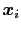
, with  between
and 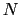
, the total
number of atoms:
between
and 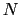
, the total
number of atoms:
The colvars module in VMD may be used to calculate these functions over a molecular structure, and to analyze the results of previous simulations.
The module is designed to perform multiple tasks concurrently during or after a simulation, the most common of which are:
- apply restraints or biasing potentials to multiple colvars, tailored on the system by choosing from a wide set of basis functions, without limitations on their number or on the number of atoms involved;
- calculate potentials of mean force (PMFs) along any set of colvars, using different enhanced sampling methods, such as Adaptive Biasing Force (ABF), metadynamics, steered MD and umbrella sampling; variants of these methods that make use of an ensemble of replicas are supported as well;
- calculate statistical properties of the colvars, such as running averages and standard deviations, correlation functions of pairs of colvars, and multidimensional histograms: this can be done either at run-time without the need to save very large trajectory files, or after a simulation has been completed using VMD and the cv command.
Note: although restraints and PMF algorithms are primarily used during simulations, they are also available in VMD to test a new input for a simulation, or to evaluate the relative free energy of a new structure based on data from a previous calculation. Options that only have an effect during a simulation are also included for compatibility purposes.
To briefly illustrate the flexibility of the colvars module, Figure 13.1 shows an example of a non-trivial configuration (the corresponding input can be found in 13.1.2).
Figure 13.1:
Graphical representation of a collective variables configuration.
The colvar called ``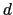
'' is defined as the difference between two distances: the first distance (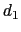
) is taken between the center of mass of atoms 1 and 2 and that of atoms 3 to 5, the second (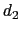
) between atom 7 and the center of mass of atoms 8 to 10.
The difference
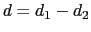
is obtained by multiplying the two by a coefficient 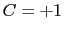
or 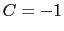
, respectively.
The colvar called ``
'' is the coordination number calculated between atoms 1 to 10 and atoms 11 to 20. A harmonic restraint is applied to both
and
: to allow using the same force constant 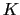
, both
and
are scaled by their respective fluctuation widths 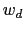
and 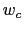
.
A third colvar ``alpha'' is defined as the  -helical content of residues 1 to 10.
The values of ``
'' and ``alpha'' are also recorded throughout the simulation as a joint 2-dimensional histogram.
-helical content of residues 1 to 10.
The values of ``
'' and ``alpha'' are also recorded throughout the simulation as a joint 2-dimensional histogram.
|
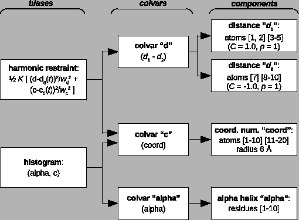
|
Detailed explanations of the design of the colvars module are provided in reference [32]. Please cite this reference whenever publishing work that makes use of this module.
Subsections
Next: General parameters and input/output
Up: VMD User's Guide
Previous: Coloring Trick - Override
Contents
Index
vmd@ks.uiuc.edu